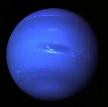

Planeta azul: Neptuno
que se destaca por su color azul intenso debido a la presencia de metano en su atmósfera. Aunque la Tierra también se ve de color azul debido a su gran cantidad de agua, Neptuno es el único planeta del sistema solar que se le atribuye este color característico. Neptuno es el octavo planeta del sistema solar y se encuentra a aproximadamente 4.500 millones de kilómetros del Sol.
